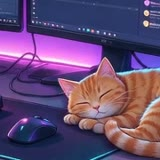

Отошла покушать 🍜
щас вернусь, чат за главного
Сцена —
❤️❤️❤️
🎒 —
⚰️ 0
🚉
СценаПлатформа
Голосование

В эфиреushla_pokushat
щас вернусь, чат за главного · !квест
Общение
Концовки 0 из 4
Как играть
Стримерша отошла, и чат остался один. Бот рассказывает историю, вы голосуете цифрой. Иногда надо написать слово.
На настоящем стриме голосует весь чат, здесь твой голос решает за всех. Каждое сообщение бота одной строкой и не длиннее 500 знаков, как в Твиче.